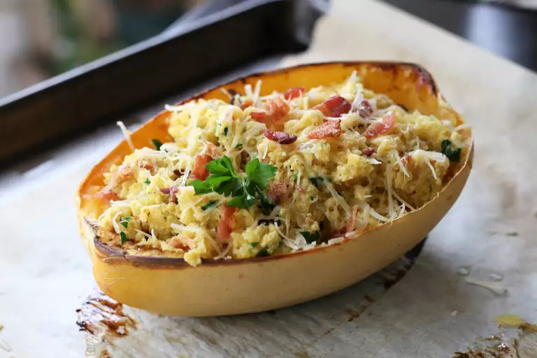

Spaghetti Carbonara

All the richness you love in carbonara without all the carbs! This recipe can easily be doubled. Serve in the
empty squash shells for a fun presentation.
Ingredients
- 1 spaghetti squash, halved and seeded
- 3 slices bacon
- 1 teaspoon minced garlic
- 2 eggs
- ¼ cup grated Parmesan cheese
- ¼ cup chopped parsley
- salt and ground black pepper to taste
How to Make Carbonara Step-By-Step
- Preheat the oven to 400 degrees F (200 degrees C). Line a baking sheet with parchment paper; place
squash on top, cut-side down.
- Bake in the preheated oven until skin is easily pierced with a fork, about 45 minutes.
- While squash is cooking, fry bacon in a large skillet over medium-high heat until crisp, 5 to 10
minutes. Transfer to a paper towel-lined plate, reserving grease in skillet. Crumble bacon when cool
enough to handle.
- Cool baked squash until easily handled. Scrape flesh into noodles using a fork. Place noodles and garlic
in the skillet with the reserved bacon grease. Cook over medium heat for 2 minutes; reduce heat to low.
- Whisk eggs and Parmesan cheese together in a small bowl; add to skillet and stir continuously for 3
minutes. Remove from heat and stir in cooked bacon pieces, parsley, salt, and pepper. Serve immediately.